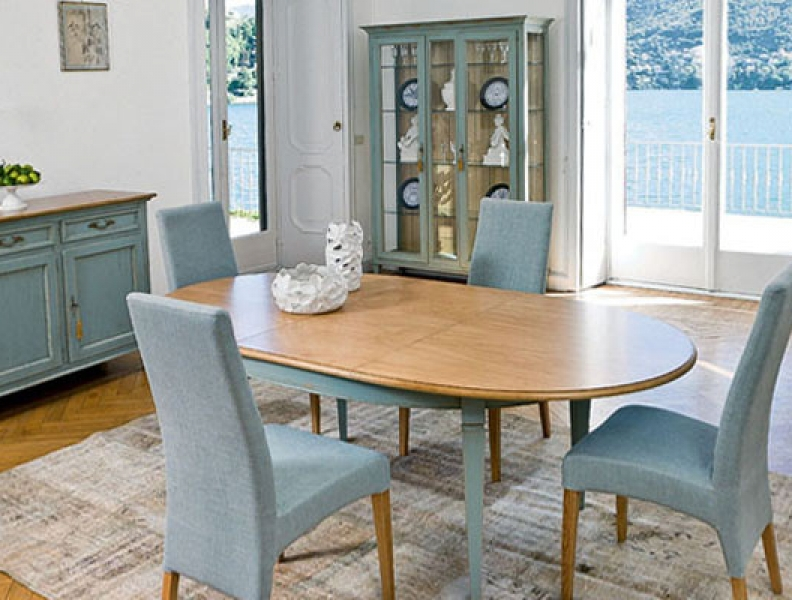

Guarda tus muebles de madera
Consejos para guardar muebles de madera
-
PASO 1. Limpiar el mueble..
En primer lugar hay que retirar el polvo de todos los rincones del mueble. Para ello es recomendable el uso de un paño de algodón húmedo que no dañe la superficie. A continuación, hay que secar la humedad que haya quedado. Si el mueble tuviera salpicaduras, manchas de grasa o, por ejemplo, marcas de vasos se recomienda usar también un producto multiusos específico para madera.
-
PASO 2. Proteger y nutrir.
Tanto si la madera se encuentra barnizada como si no, Bluespace considera importante aplicar una fina capa de cera que ayude a restablecer el brillo del mueble y a proteger la superficie de posibles rayones. Para este propósito, de hecho, existe una cera en spray para madera que se aplica de forma sencilla.
Si el mueble no está barnizado podemos añadir un aceite nutritivo. Éste impregnará las fibras de madera como haría la resina de forma natural y ayudará a que los muebles no se agrieten y no pierdan luminosidad. Además, debemos protegerlo con un líquido anti carcoma.
-
PASO 3. Embalar y guardar.
Para aislar los muebles es recomendable usar telas que los protejan de la luz y nunca plásticos, ya que estos pueden atrapar la condensación y dañarlos. Una vez elegidas las telas procederemos a resguardar con ellas los muebles. Para ello, primero hay que colocar las telas en el suelo, situar el mueble encima y a continuación cubrirlos con más telas asegurando que queden envueltos. Después, se ha de atar una cuerda alrededor del mueble para ceñir las telas. Así, los protegemos correctamente de cualquier amenaza externa y del paso del tiempo.
Algo esencial es encontrar el lugar más adecuado para su almacenaje. Los pasos anteriores son básicos para preservar los muebles, pero si no escogemos el lugar idóneo, serán en vano. Por ello, debemos buscar un espacio donde la luz solar no entre directamente y no haya humedad. Un lugar que se adecue al tamaño de los muebles, que se adapte a nuestras necesidades y, sobre todo, que sea un referente de confianza